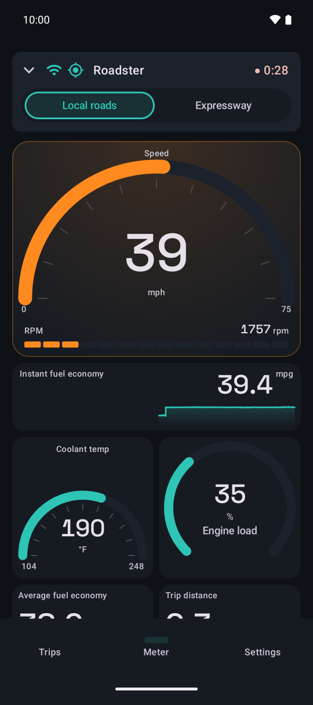
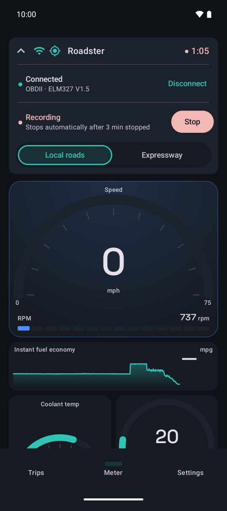
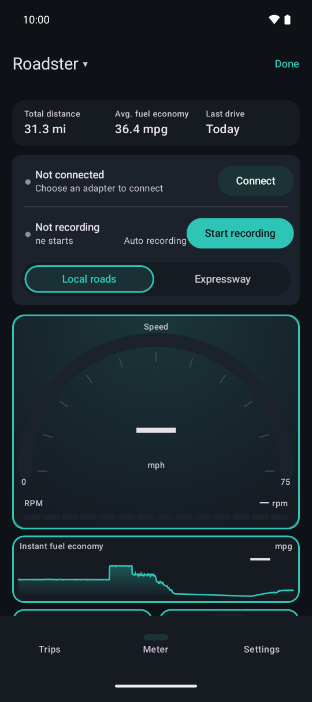
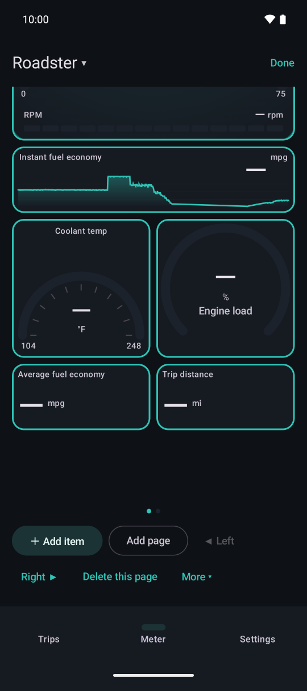
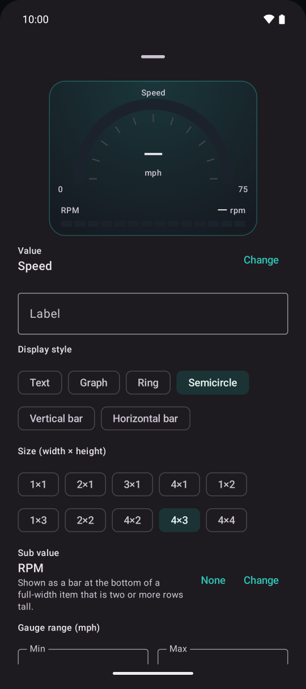

Meter
While connected, the meter shows speed, RPM, fuel economy and more in real time. You can freely change the items, their style, size and order within the grid.
Reading the screen

12345- 1Connection and GPS status, vehicle name and recording time. Tap to open the connection and recording controls
- 2Road mode (local roads / expressway)
- 3The main item (full width, two or more rows tall). It is shown large and its color follows how you drive (idling, cruising, accelerating). Below it is the sub value (RPM here)
- 4Graph item (recent changes)
- 5Half-circle, circle, text and other items. Swipe left or right to switch to other pages

123The card at the top, tapped open while recording.
- 1Disconnect from the adapter
- 2Stop recording (“Start recording” when not recording)
- 3Collapse to give the meter more room
When not recording, the top of the meter can show figures for the vehicle (trip distance, time, fuel economy and so on). Tap it to choose what to show.
Editing the meter
Touch and hold anywhere on the meter to start editing. When not recording, you can also tap “Edit” at the top right. You cannot start editing while driving (stop, then touch and hold). Tap “Done” at the top right when finished.

12- 1Finish editing
- 2Items are outlined. Tap one for its settings, drag to reorder

123The bottom of the screen while editing.
- 1Add an item
- 2Add a page
- 3Menu: choose a template (Simple, Standard, Detailed), copy to another page, use as the expressway page and more

1234Item settings. Further down are the gauge range, value correction and warnings (color and sound when a value goes past a limit).
- 1The value to show (speed, RPM, coolant temperature, instant fuel economy and more)
- 2Style (text, graph, round, half-round, bars)
- 3Size (width × height)
- 4Sub value. When the item is the main size (full width, two or more rows tall), choose a value to show as a bar and a number at the bottom of the card
The meter layout is saved per vehicle. Use the ▾ next to the vehicle name to switch vehicles (not while recording).
Choose a template in the More menu to replace the items on a page with Simple, Standard or Detailed. A new meter starts with Standard (speed as a half circle with RPM as the sub value, plus the fuel economy graph, coolant, engine load, average fuel economy and trip distance). The main item gets a colored edge and glow: blue when stopped, orange when accelerating and your highlight color otherwise.
Road mode (local roads / expressway)
Switch manually with “Local roads” and “Expressway” on the meter. It never switches by itself.
- It changes the speeding threshold (choose the speeds for each mode in Settings → Driving events)
- If you switch while recording, the time is saved with the trip, and the trip details show distance and fuel economy separately for local roads and expressways
- New trips start in local roads mode. When recording resumes after a break as the same trip, the mode carries over
- Every 2 hours of driving in expressway mode, a notification and a card on the meter suggest taking a break (stopping for 15 minutes resets the count)
- With Premium, you can make an expressway meter page. Switching to expressway mode moves to that page